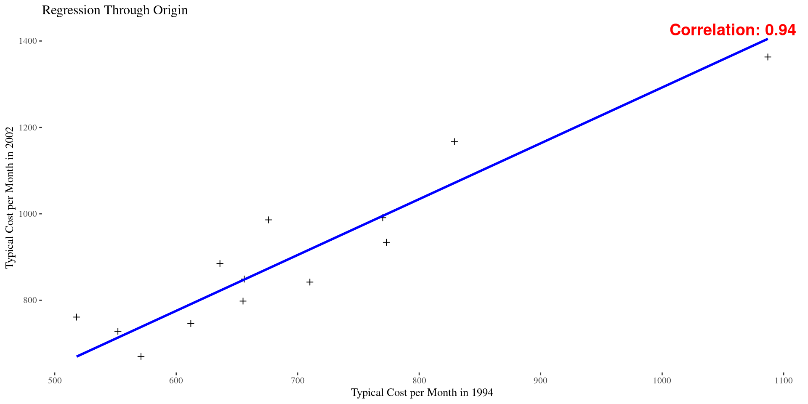
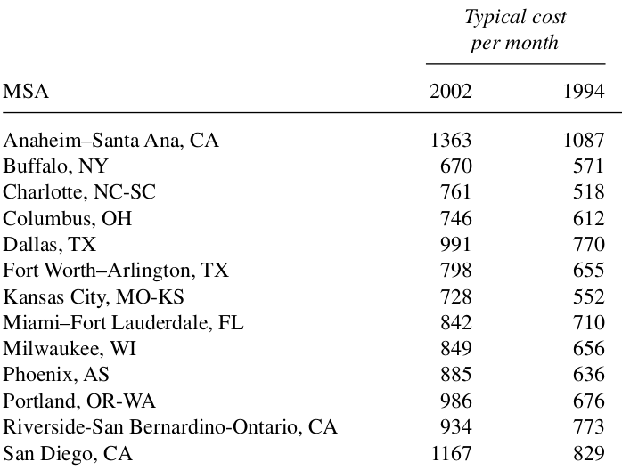
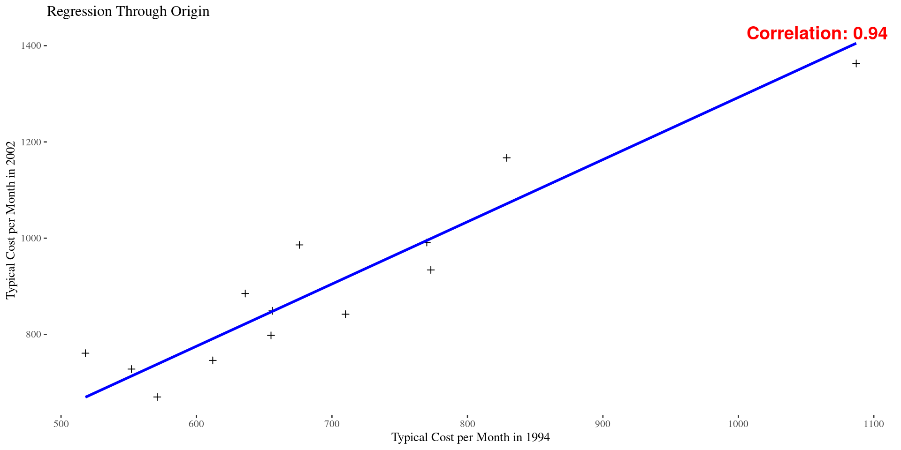

MATH 313: Survey Design and Sampling
Formulae for covariance and standard deviations:
\[ s_{xy} = \frac{1}{n-1} \sum_{i=1}^n\left(x_i-\bar{x}\right)\left(y_i-\bar{y}\right) \]
\[ s_x^2 = \frac{1}{n-1} \sum_{i=1}^n\left(x_i-\bar{x}\right)^2 \]
\[ s_y^2 = \frac{1}{n-1} \sum_{i=1}^n\left(y_i-\bar{y}\right)^2 \]
Motivation for using CV:
Approximate \(90\%\) confidence interval for \(R\):
\[ r \pm 1.645 \sqrt{\hat{V}(r)} \]
Where \(\hat{V}(r)\) is the estimated variance of \(r\), in terms of \(\hat{\rho}\):
\[ \hat{V}(r) = \frac{1-f}{n} r^2 \left((\operatorname{cv}(y))^2 + (\operatorname{cv}(x))^2 - 2 \hat{\rho} \cdot \operatorname{cv}(x) \cdot \operatorname{cv}(y)\right) \]
Example 1: The U.S. government’s American Housing Survey keeps tabs on many aspects of the characteristics of housing in America, including monthly costs for home ownership and the value of houses. One aspect of the survey tracks 47 metropolitan statistical areas (MSAs) over time by sampling a subset of them every four years or so. The survey for 2002 sampled the 13 MSAs listed in Table 6.1. Also listed there are the typical monthly costs of home ownership (not including maintenance) for 2002 and 1994 as well as the typical values of houses in those two years, respectively. These data are for owner-occupied houses only. Use these data to estimate \(R\), the ratio of mean typical monthly costs for 2002 as compared to those of 1994 for all 47 MSAs and calculate an appropriate margin of error.


costs <- data.frame(
MSA = c("Anaheim-Santa Ana, CA", "Buffalo, NY", "Charlotte, NC-SC", "Columbus, OH",
"Dallas, TX", "Fort Worth-Arlington, TX", "Kansas City, MO-KS", "Miami-Fort Lauderdale, FL",
"Milwaukee, WI", "Phoenix, AS", "Portland, OR-WA", "Riverside-San Bernardino-Ontario, CA", "San Diego, CA"),
X1994 = c(1087, 571, 518, 612, 770, 655, 552, 710, 656, 636, 676, 773, 829),
X2002 = c(1363, 670, 761, 746, 991, 798, 728, 842, 849, 885, 986, 934, 1167)
)
correlation_coefficient <- cor(costs$X1994, costs$X2002)
ggplot(costs, aes(x = X1994, y = X2002)) +
geom_point(pch = 3) +
geom_smooth(method = "lm", formula = y ~ x - 1, se = FALSE, color = "blue") +
labs(title = "Regression Through Origin and Specific Point",
x = "Typical Cost per Month in 1994",
y = "Typical Cost per Month in 2002") +
annotate("text", x = Inf, y = Inf, label = sprintf("Correlation: %.2f", correlation_coefficient),
hjust = 1.05, vjust = 1.05, size = 5, color = "red", fontface = "bold", angle = 0)Calculate an approximate \(90\%\) confidence interval for the ratio \(R\) using the correlation coefficient from the above example.
[1] 695.7692[1] 901.5385[1] 148.479[1] 192.4784[1] 0.2134027[1] 0.2134999[1] 0.9380038[1] 1.295744# Sample size
n <- length(costs$X1994)
N <- 47
# Sampling fraction
f <- n/N
# Variance calculation
var_r <- ((1 - f) / n) * r^2 * (cv_2002^2 + cv_1994^2 -
2 * correlation * cv_1994 * cv_2002)
# Calculate the confidence interval at 90% confidence level
ci <- r + c(-1,1)*qt(0.95, df = n)* sqrt(var_r)
ci[1] 1.255058 1.336429